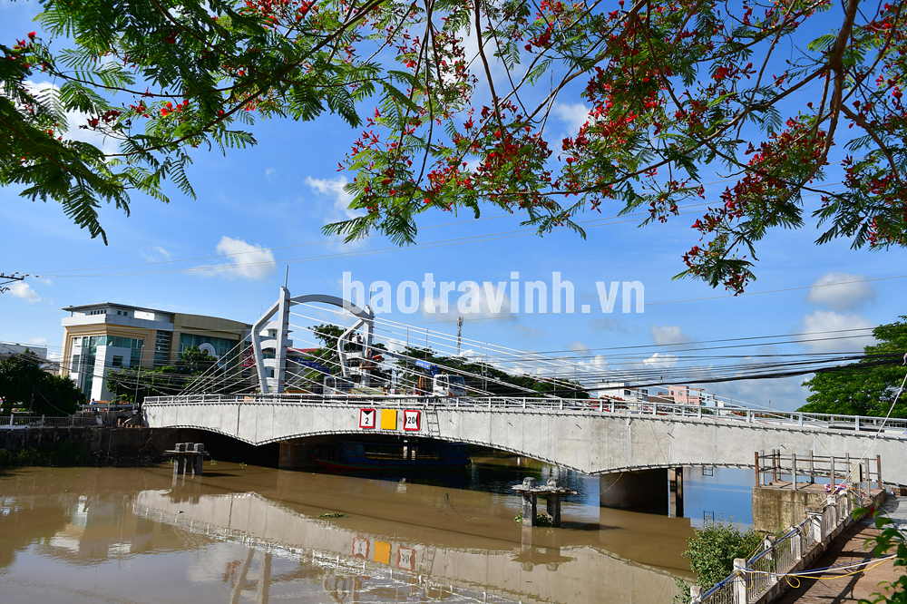

🌙 / ☀️
🎵

Tên chính thức: Cầu Long Bình 1
Vị trí: kết nối giao thông khu vực nội ô thành phố với khu vực lân cận gồm huyện Châu Thành
khởi công:13/6/2023
hoàn thành: 01/7/2024
Chiều dài: 54 m
Chiều rộng: 12 m
Tải trọng: HL93
Loại cầu : Bê tông cốt thép
Tổng mức đầu tư: 63 tỷ đồng
Vai trò: Giảm ùn tắc giao thông trung tâm thành phố